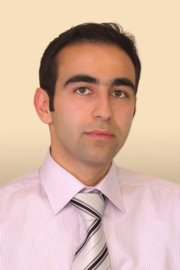
I am a senior research scientist at D-Wave Systems Inc. specializing in machine learning and computer vision. My current research focuses on deep generative learning with discrete latent variable models (ICML'18, Preprint) and weakly-supervised learning from noisy labels (NIPS'17, ECCV'14, ICCV'13a). Prior to D-Wave, I was a PhD student under Greg Mori's supervision working on latent variable frameworks for visual analysis (ICCV'13b, NIPS'13, NIPS'12, ECCV'12), then a research faculty member at Simon Fraser University, where I led several research projects at the intersection of deep learning and video analysis (CVPR'16a , CVPR'16b, ICPR'16). I grew up in Iran and completed my undergrad in computer engineering at Sharif University of Technology.
At D-Wave, I solely developed Akros the robust image labeling framework that was presented at the main NIPS conference in 2017. In Dec 2017, a variant of this framework won the CATARACTS surgical video analysis challenge in collaboration with Siemense Healthinears. This framework later became one of the founding services for Quadrant.ai, D-Wave's recently-launched machine learning business unit.
E-mail: avahdat [at] sfu [dot] ca| 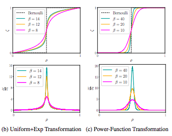 |
DVAE#: Discrete Variational Autoencoders with Relaxed Boltzmann Priors. Arash Vahdat*, Evgeny Andriyash*, and William G. Macready. arXiv:1805.07445, 2018. [arXiv] [bibtex] [code] |
| 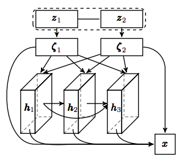 |
DVAE++: Discrete Variational Autoencoders with Overlapping Transformations. Arash Vahdat, William Macready, Zhengbing Bian, Amir Khoshaman, and Evgeny Andriyash. International Conference on Machine Learning (ICML) 2018. [arXiv] [bibtex] |
| 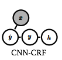 |
Toward Robustness against Label Noise in Training Deep Discriminative Neural Networks. Arash Vahdat. Neural Information Processing Systems (NIPS) 2017. [arXiv] [bibtex] |
| 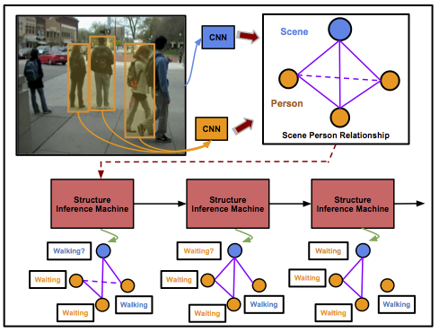 |
Structure Inference Machines: Recurrent Neural Networks for Analyzing Relations in Group Activity Recognition. Zhiwei Deng, Arash Vahdat, Hexiang Hu, and Greg Mori. IEEE Computer Vision and Pattern Recognition (CVPR), 2016. [pdf] [bibtex] |
| 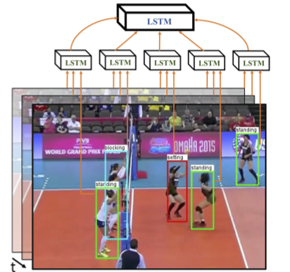 |
A Hierarchical Deep Temporal Model for Group Activity Recognition. Mostafa S. Ibrahim, Srikanth Muralidharan, Zhiwei Deng, Arash Vahdat, and Greg Mori. IEEE Computer Vision and Pattern Recognition (CVPR), 2016. [pdf] [bibtex] |
| 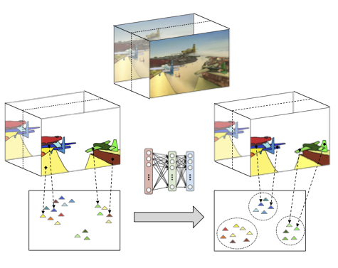 |
Unsupervised Learning of Supervoxel Embeddings for Video Segmentation. Mehran Khodabandeh, Srikanth Muralidharan, Arash Vahdat, Nazanin Mehrasa, Eduardo M. Pereira, Shin'ichi Satoh, and Greg Mori. IAPR International Conference on Pattern Recognition (ICPR), 2016. [pdf] [bibtex] |
| 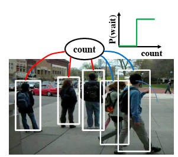 |
Visual Recognition by Counting Instances: A Multi-Instance Cardinality Potential Kernel. Hossein Hajimirsadeghi, Wang Yan, Arash Vahdat, and Greg Mori. IEEE Computer Vision and Pattern Recognition (CVPR), 2015. [pdf] [bibtex] |
| 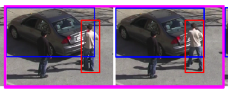 |
Discriminative Key-Component Models for Interaction Detection and Recognition. Yasaman S. Sefidgar, Arash Vahdat, Stephen Se, and Greg Mori. Computer Vision and Image Understanding (CVIU), 2015. [pdf] [bibtex] |
| 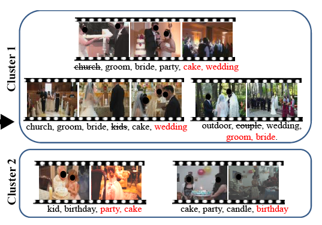 |
Discovering Video Clusters from Visual Features and Noisy Tags. Arash Vahdat, Guang-Tong Zhou, and Greg Mori. European Conference on Computer Vision (ECCV), 2014. [pdf] [supplementary material] [bibtex] [Note on the annotation] |
| 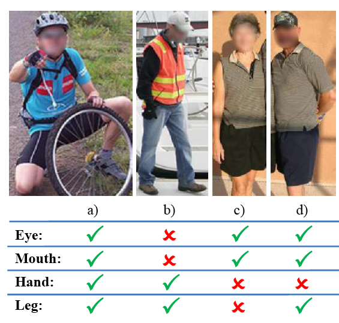 |
Handling Uncertain Tags in Visual Recognition. Arash Vahdat and Greg Mori. IEEE International Conference on Computer Vision. (ICCV), 2013. [pdf] [bibtex] [annotation] [features] |
| 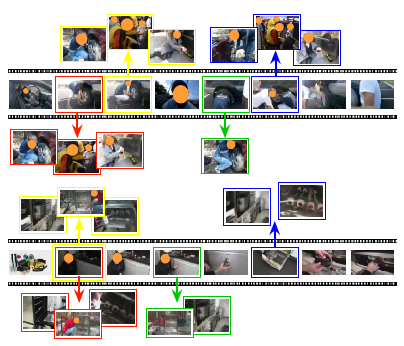 |
Compositional Models for Video Event Detection: A Multiple Kernel Learning Latent Variable Approach. Arash Vahdat, Kevin Cannons, Greg Mori, Sangmin Oh and Ilseo Kim. IEEE International Conference on Computer Vision. (ICCV), 2013. [pdf] [bibtex] |
| 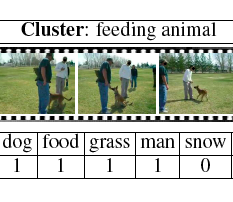 |
Latent Maximum Margin Clustering. Guang-Tong Zhou, Tian Lan, Arash Vahdat and Greg Mori. Neural Information Processing Systems (NIPS) 2013. [pdf] [bibtex] |
| 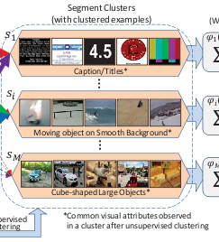 |
Segmental Multi-way Local Pooling for Video Recognition. Ilseo Kim, Sangmin Oh, Arash Vahdat, Kevin Cannons, Amitha Perera, and Greg Mori. ACM Multimedia Conference (ACM MM), 2013. [pdf] [bibtex] |
| 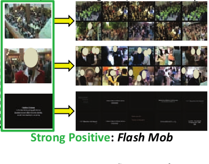 |
Multimedia Event Detection with Multimodal Feature Fusion and Temporal Concept Localization. Sangmin Oh, Scott McCloskey, Ilseo Kim, Arash Vahdat, Kevin Cannons, Hossein Hajimirsadeghi, Greg Mori, Amitha Perera, Megha Pandey, and Jason Corso. Machine Vision and Applications (MVA) Special issue on Multimedia Event Detection 2013. [link] |
| 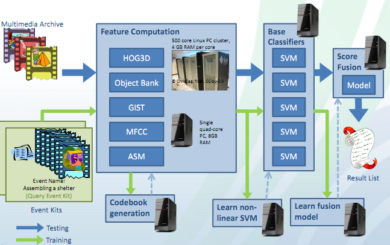 |
TRECVID 2012 GENIE: Multimedia Event Detection and Recounting. TRECVID Workshop, 2012. Amitha Perera et al. [pdf] |
| 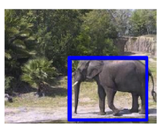 |
Kernel Latent SVM for Visual Recognition. Weilong Yang, Yang Wang, Arash Vahdat, and Greg Mori. Neural Information Processing Systems (NIPS), 2012. [pdf] [bibtex] |
| 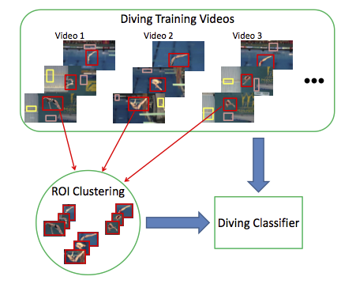 |
Similarity Constrained Latent Support Vector Machine: An Application to Weakly Supervised Action Classification. Nataliya Shapovalova, Arash Vahdat, Kevin Cannons, Tian Lan, Greg Mori. European Conference on Computer Vision (ECCV), 2012. [pdf] [bibtex] |
| 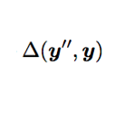 |
Complex Loss Optimization via Dual Decomposition. Mani Ranjbar, Arash Vahdat, and Greg Mori. IEEE Computer Vision and Pattern Recognition (CVPR), 2012. [pdf] [bibtex] |
|
GENIE TRECVID 2011 Multimedia Event Detection: Late-Fusion Approaches to Combine Multiple Audio-Visual features. Amitha Perera et al. TRECVID Workshop, 2011. [pdf] |
|
| 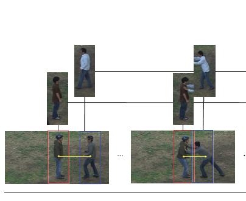 |
A Discriminative Key Pose Sequence Model for Recognizing Human Interactions. Arash Vahdat, Bo Gao, Mani Ranjbar, and Greg Mori. Eleventh IEEE International Workshop on Visual Surveillance, 2011. [pdf] [bibtex] |
| 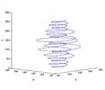 |
Colour From Grey by Optimized Colour Ordering. Arash Vahdat, and Mark Drew. Color & Image Conference (CIC18), San Antonio, Nov. 2010. [pdf] [pptx] [Talk] |
| 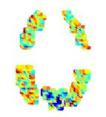 |
Generalized Sparse Classifiers for Decoding Cognitive States in fMRI. Bernard Ng, Arash Vahdat, Rafeef Abugharbieh, and Ghassan Hamarneh. In Medical Image Computing and Computer-Assisted Intervention Workshop on Machine Learning in Medical Imaging (MICCAI MLMI), 2010. [pdf] [ppt] |